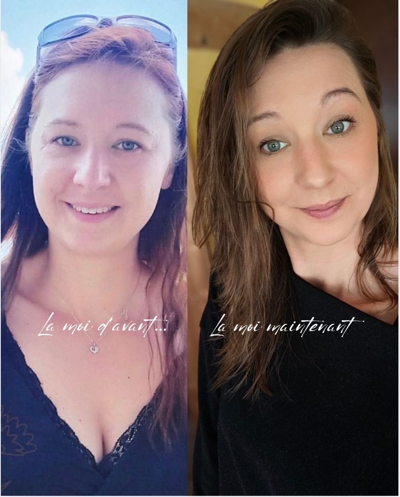
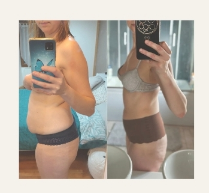

Mon histoire
Je ne l'ai pas trouvée dans un livre.
Je l'ai vécue.

2025. Une dépression post-partum, et une phrase qui reste.
Après la naissance de mon petit garçon, j'ai traversé une grosse dépression post-partum. Et au milieu de tout ça, on m'a dit que je n'étais plus attirante — depuis plusieurs années.
Ce n'est pas cette phrase qui a tout déclenché. C'est ce qu'elle a réveillé : j'ai enfin cherché à comprendre pourquoi, depuis 2017, mes nuits étaient hachées, mon endormissement difficile — et pourquoi je pensais, à tort, ne ressentir aucun stress.
Comprendre les signaux, pas compter les calories
Mon rapport à la nourriture a toujours été sain. Le problème n'était pas là. Il était dans un stress que je ne savais même pas porter, depuis huit ans.
J'ai commencé par me complémenter pour réguler mon stress et mon sommeil. Ensuite seulement, une détox en douceur pour nettoyer. Et enfin, une relance de mon métabolisme. Dans cet ordre. Pas l'inverse.

« La seule chose que j'ai vraiment changée : manger en pleine conscience, et marcher 15 à 20 minutes par jour, poussette et bébé compris. »
Challengée. Jamais brisée. 🦋